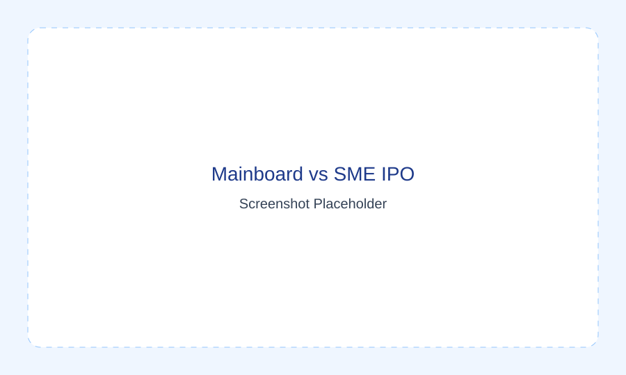
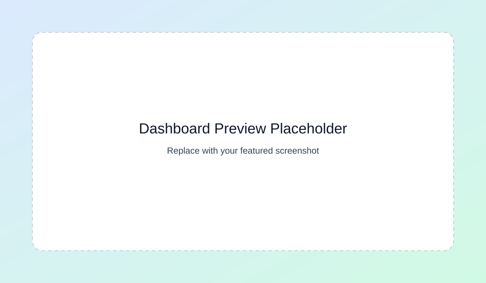
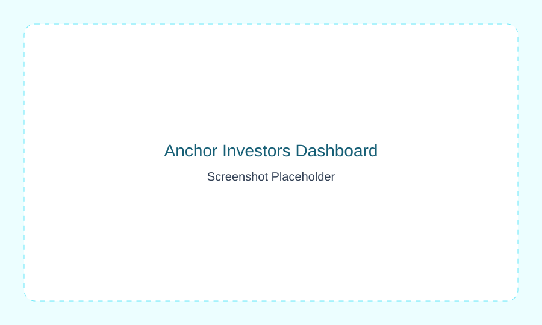
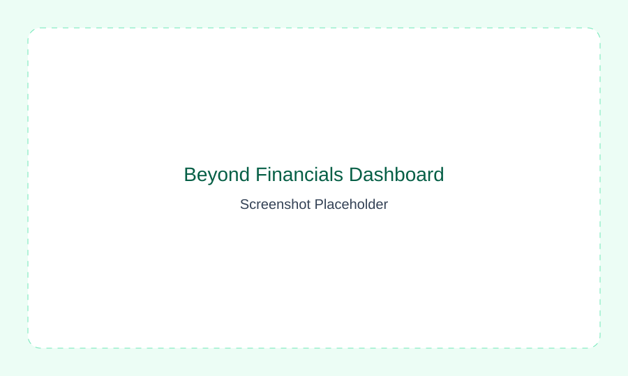

Mainboard vs SME IPO Performance
Compare listing and post-listing outcomes over the last five years to understand broad market context.
Beyond Financials Philosophy
I built this hub to decode Indian SME IPO behavior through data, market structure, and qualitative signals that typical ratio-based screens often miss.

Replace this image with your featured dashboard screenshot.
Over the past 3+ years, I have researched SME listings, price behavior, lead managers, anchor participation, and post-listing patterns. This platform brings that work together in an educational format so you can learn a practical, structured approach to evaluating SME IPO opportunities.

Compare listing and post-listing outcomes over the last five years to understand broad market context.

Track participation quality, allocation behavior, and subsequent performance dynamics in SME IPOs.

Evaluate non-traditional signals such as lead manager patterns, issue structure, and qualitative edge factors.
Research Timeline
3+ Years
Dashboards
3 Core Models
Focus Area
Indian SME IPOs
Credentials
NISM XIX-C & XIX-E
Start with the dashboards, then explore the methodology and insights to understand how each factor fits into a practical decision framework.